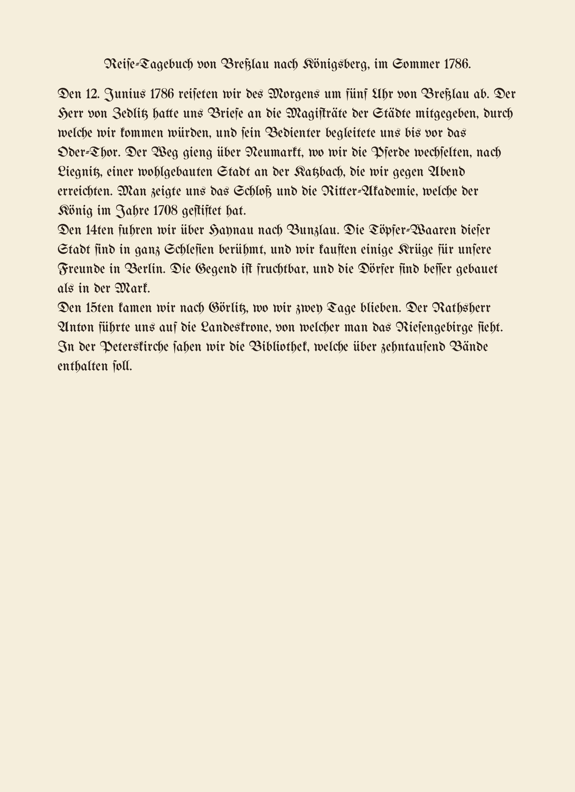
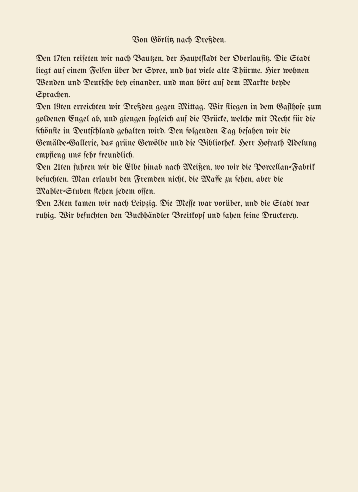
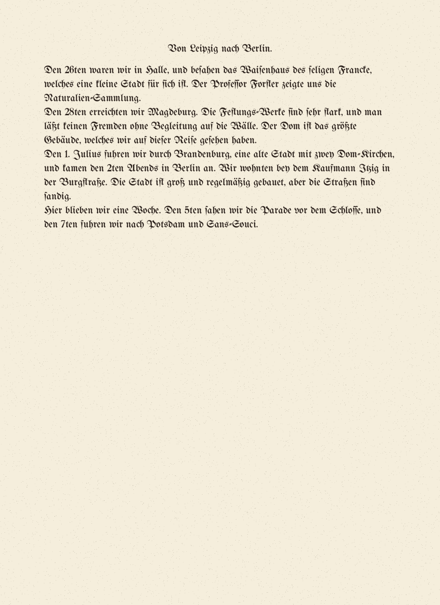
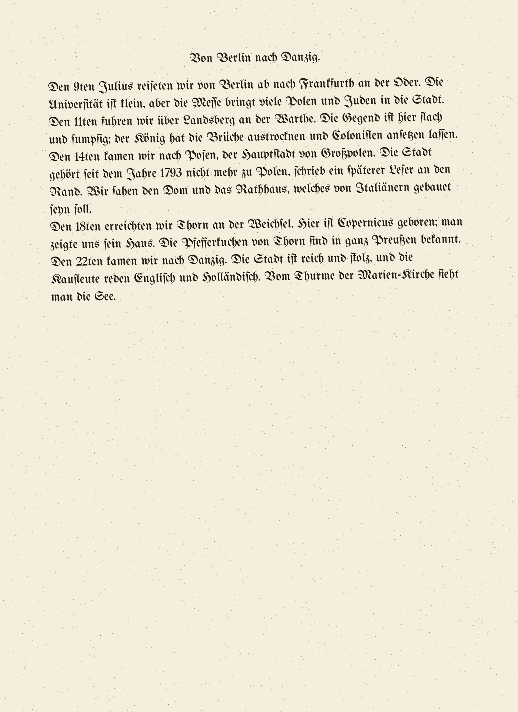
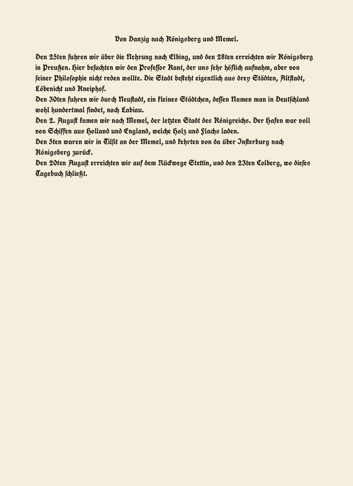

real-gartenlaube-1853-p001

medoid openrouter:google/gemini-3.1-pro-preview
agreement 0.974 · family gap 0.036 · medoid CER norm 0.013 · 78 spans marked, 12 on the check-in list
| tes frak2021 | tes deu_latf | tes Fraktur | tes deu_frak | kra german_pri | ope gemini-3.8 | ope gemini-3.1 | ope qwen3-vl-2 | ope claude-hai | family | reliability | CER n | |
|---|---|---|---|---|---|---|---|---|---|---|---|---|
| frak2021 | 0.99 | 0.98 | 0.96 | 0.96 | 0.96 | 0.96 | 0.96 | 0.96 | ocr | 0.969 | 0.073 | |
| deu_latf | 0.99 | 0.98 | 0.96 | 0.96 | 0.96 | 0.96 | 0.96 | 0.96 | ocr | 0.965 | 0.082 | |
| Fraktur | 0.98 | 0.98 | 0.96 | 0.95 | 0.95 | 0.95 | 0.95 | 0.95 | ocr | 0.959 | 0.086 | |
| deu_frak | 0.96 | 0.96 | 0.96 | 0.94 | 0.94 | 0.94 | 0.93 | 0.94 | ocr | 0.945 | 0.108 | |
| german_print.mlmodel | 0.96 | 0.96 | 0.95 | 0.94 | 0.99 | 0.99 | 0.98 | 0.98 | ocr | 0.968 | 0.034 | |
| gemini-3.8-flash | 0.96 | 0.96 | 0.95 | 0.94 | 0.99 | 1.00 | 1.00 | 1.00 | vision | 0.973 | 0.014 | |
| gemini-3.1-pro-preview | 0.97 | 0.96 | 0.95 | 0.94 | 0.99 | 1.00 | 1.00 | 1.00 | vision | 0.974 | 0.013 | |
| qwen3-vl-235b-a22b-ins | 0.96 | 0.96 | 0.95 | 0.93 | 0.98 | 1.00 | 1.00 | 1.00 | vision | 0.972 | 0.017 | |
| claude-haiku-5.5 | 0.96 | 0.96 | 0.95 | 0.94 | 0.98 | 1.00 | 1.00 | 1.00 | vision | 0.973 | 0.015 |
cells: agreement between two readings (1 − normalised distance)
Base text (medoid) with disagreements
Check-in list (dissent weight ≥ 25%)
| # | base | weight | disagree | alternatives |
|---|---|---|---|---|
| 0 | Zweite | 0.62 | 5/8 | deu_latfE: LER nN FrakturC: TES > deu_frakC « THE-» :-. J german_print.mlmod(o. 1. 1i 5 22 qwen3-vl-235b-a22bRichter |
| 1 | Auflage. № 1. 1853. Die Gartenlaube. Familien-Blatt. - | 1.00 | 8/8 | Frakturs s=Psf german_print.mlmod27J ⸗ qwen3-vl-235b-a22bNº. claude-haiku-5.5Nº = deu_frakJl sicstll deu_latfZk - frak2021J sPs gemini-3.8-flash. |
| 4 | Bogen | 0.37 | 3/8 | FrakturD german_print.mlmodP deu_frakPa |
| 5 | Illustrationen. | 0.37 | 3/8 | frak2021A german_print.mlmodJ deu_frakm |
| 12 | Lande! . Zu | 0.75 | 6/8 | german_print.mlmod(nothing) frak2021, deu_latf, Fraktur, deu_frak. claude-haiku-5.5(nothing) |
| 38 | Religions- und | 0.63 | 5/8 | Fraktur german_print.mlmod⸗ gemini-3.8-flash= claude-haiku-5.5= frak2021(nothing) |
| 66 | der Ihr | 0.37 | 3/8 | deu_frakt deu_latfJ FrakturJ |
| 67 | gut-deutsche | 0.38 | 3/8 | german_print.mlmod⸗ gemini-3.8-flash= claude-haiku-5.5= |
| 72 | Ernst | 0.37 | 3/8 | deu_latf4" Fraktur> u deu_frak»s! " |
| 73 | Gartenlaube | 0.62 | 5/8 | deu_fraku qoc Frakturu n frak2021n deu_latfn german_print.mlmodn |
| 75 | mit vielen Illustrationen und kostet vierteljährlich nur 10 Ngr. Alle Buchhandlungen | 0.62 | 5/8 | frak2021und Postäter nehmen Bestellungen an." Lepzig, Ende December 1852. deu_latf1 und Postä:er nehmen Bestellungen an. ; Lepzig, Ende December 1852.J deu_fraks und Postiiscr nehmen Bestellungen an. , Lepzsg, Ende December 1852·Ju german_print.mlmodssA Fraktur| |
| 76 | und Postämter nehmen Bestellungen an. Leipzig, Ende December 1852. Die | 0.62 | 5/8 | frak2021(nothing) deu_latf(nothing) deu_frakW Fraktur:, vielen Jllustrationen und kostet vierteljährlih nur 10 Ngr Alle Buchhandlungen german_print.mlmod(nothing) |
real-grimm-khm-1812-i-p093

medoid openrouter:anthropic/claude-haiku-5.5
agreement 0.947 · family gap 0.054 · medoid CER norm 0.009 · 93 spans marked, 34 on the check-in list
| tes frak2021 | tes deu_latf | tes Fraktur | tes deu_frak | kra german_pri | ope gemini-3.8 | ope gemini-3.1 | ope qwen3-vl-2 | ope claude-hai | family | reliability | CER n | |
|---|---|---|---|---|---|---|---|---|---|---|---|---|
| frak2021 | 0.90 | 0.89 | 0.87 | 0.94 | 0.94 | 0.95 | 0.94 | 0.95 | ocr | 0.924 | 0.093 | |
| deu_latf | 0.90 | 0.89 | 0.85 | 0.89 | 0.89 | 0.89 | 0.89 | 0.89 | ocr | 0.887 | 0.180 | |
| Fraktur | 0.89 | 0.89 | 0.83 | 0.88 | 0.89 | 0.89 | 0.89 | 0.89 | ocr | 0.881 | 0.185 | |
| deu_frak | 0.88 | 0.85 | 0.84 | 0.87 | 0.87 | 0.87 | 0.87 | 0.87 | ocr | 0.865 | 0.208 | |
| german_print.mlmodel | 0.94 | 0.89 | 0.88 | 0.86 | 0.98 | 0.98 | 0.98 | 0.98 | ocr | 0.939 | 0.029 | |
| gemini-3.8-flash | 0.94 | 0.89 | 0.89 | 0.87 | 0.98 | 0.99 | 1.00 | 1.00 | vision | 0.946 | 0.010 | |
| gemini-3.1-pro-preview | 0.95 | 0.89 | 0.89 | 0.87 | 0.98 | 0.99 | 0.99 | 1.00 | vision | 0.946 | 0.018 | |
| qwen3-vl-235b-a22b-ins | 0.94 | 0.89 | 0.89 | 0.87 | 0.98 | 1.00 | 0.99 | 1.00 | vision | 0.946 | 0.011 | |
| claude-haiku-5.5 | 0.95 | 0.89 | 0.89 | 0.87 | 0.98 | 1.00 | 1.00 | 1.00 | vision | 0.947 | 0.009 |
cells: agreement between two readings (1 − normalised distance)
Base text (medoid) with disagreements
Check-in list (dissent weight ≥ 25%)
| # | base | weight | disagree | alternatives |
|---|---|---|---|---|
| 0 | - 93 | 0.61 | 5/8 | frak2021* 8 FrakturA 5 deu_frak«s :-' .,«i«,» deu_latfNi==11 5/1-= german_print.mlmod(nothing) |
| 3 | freundlich: | 0.74 | 6/8 | frak2021⸗ l deu_latf / Fraktur1 deu_frak«!I»« german_print.mlmod⸗ gemini-3.1-pro-pre= |
| 5 | sollen | 0.37 | 3/8 | Fraktur(e deu_latf(im frak20216. |
| 8 | lesen?" | 0.61 | 5/8 | Fraktur| 24/. deu_latf| 24, frak2021 german_print.mlmod2 deu_frakM |
| 10 | die schlechten | 0.36 | 3/8 | Fraktur- i C deu_frak,sL « . » deu_latf- |
| 11 | Kröpfchen, | 0.61 | 5/8 | deu_latfFefi s FrakturHedv ; frak2021bs 90%½ deu_fraks m » - « 7 german_print.mlmods |
| 13 | guten ins | 0.36 | 3/8 | deu_latf) - deu_frak(nothing) Fraktur" |
| 14 | Töpfchen." | 0.48 | 4/8 | deu_frakm frak2021(nothing) deu_latf // ? Fraktur 7 |
| 20 | geschwind, | 0.37 | 3/8 | FrakturG deu_latfFRBUNG frak2021(nothing) |
| 25 | waren, | 0.62 | 5/8 | frak2021⸗ Fraktur? deu_frak-' german_print.mlmod⸗ gemini-3.1-pro-pre= |
| 26 | "Aschenputtel, | 0.48 | 4/8 | frak2021" deu_latf,, ? deu_frak,, " ««- Fraktur; |
| 27 | du auch | 0.36 | 3/8 | deu_latfy deu_frak« Fraktur' |
| 28 | gehen | 0.36 | 3/8 | deu_latf- Fraktur- deu_frak- |
| 30 | tanzen." "O | 0.61 | 5/8 | german_print.mlmodk W deu_frak-« -3-« » -,,-0 Fraktur/ ' -¿/D' frak2021 ö deu_latf== | - ' |
| 34 | schmutzigen | 0.37 | 3/8 | Fraktur{ b german_print.mlmodß deu_latfß |
| 35 | hingehen?" | 0.49 | 4/8 | deu_frakii ck- « frak2021"' Fraktur(nothing) german_print.mlmod'1 |
| 36 | "Geh | 0.36 | 3/8 | deu_latf== / deu_frak» - Fraktur71 S " |
| 40 | schüttele daran | 0.49 | 4/8 | german_print.mlmodu deu_frak(nothing) deu_latf" Fraktur' ti |
| 44 | Kleider, | 0.36 | 3/8 | Frakturé ét deu_latfv deu_frak-" |
| 48 | wieder." - | 0.49 | 4/8 | Fraktur(nothing) deu_frak « german_print.mlmod(nothing) deu_latf= |
| 49 | Aschenputtel | 0.36 | 3/8 | deu_latf" Fraktur' deu_frakk |
| 54 | sprach: | 0.62 | 5/8 | deu_latf Fraktur qwen3-vl-235b-a22b deu_frakk german_print.mlmodt |
| 55 | "Bäumlein | 0.48 | 4/8 | deu_latf; " Fraktur4 ¿ â deu_frak« a frak2021a |
| 59 | wirf | 0.36 | 3/8 | deu_latf: ; Fraktur: / ' deu_frak» ; es |
| 61 | mich!" | 0.48 | 4/8 | deu_latfm : frak2021 l Frakture | * R deu_frak-« « « - |
| 65 | prächtig | 0.74 | 6/8 | Frakturv â 9 : frak2021⸗ deu_latfe : deu_frak» german_print.mlmod⸗ gemini-3.1-pro-pre= |
| 69 | seidene Strümpfe mit silbernen Zwickeln und silberne | 0.48 | 4/8 | frak2021l deu_latf: Fraktur: deu_frak« |
| 72 | sonst | 0.48 | 4/8 | frak2021(nothing) deu_latf, Fraktur(nothing) deu_frak(nothing) |
| 75 | Aschenputtel | 0.74 | 6/8 | frak2021⸗ · deu_latf; 2 FrakturE z deu_frakf , german_print.mlmod⸗ gemini-3.1-pro-pre= |
| 79 | sich | 0.36 | 3/8 | deu_latf > Fraktur e deu_frak e |
| 80 | schön | 0.36 | 3/8 | deu_latf. FrakturS ó deu_frake |
| 86 | die Hausthüre | 0.49 | 4/8 | deu_latf" ! ä Fraktur' ! ú deu_frakJ german_print.mlmod: |
| 88 | mit sechs federgeschmückten | 0.74 | 6/8 | deu_fraki s e ly i deu_latf/ " uit? Fraktur/ é - t? frak2021⸗ german_print.mlmod⸗ gemini-3.1-pro-pre= |
| 92 | Blau und | 0.37 | 3/8 | deu_frakei-pl s deu_latfy' german_print.mlmod 7 |
real-schiller-musenalmanach-1796-p093

medoid openrouter:google/gemini-3.1-pro-preview
agreement 0.983 · family gap 0.013 · medoid CER norm 0.018 · 41 spans marked, 9 on the check-in list
| tes frak2021 | tes deu_latf | tes Fraktur | tes deu_frak | kra german_pri | ope gemini-3.8 | ope gemini-3.1 | ope qwen3-vl-2 | ope claude-hai | family | reliability | CER n | |
|---|---|---|---|---|---|---|---|---|---|---|---|---|
| frak2021 | 0.96 | 0.97 | 0.94 | 0.98 | 0.98 | 0.98 | 0.98 | 0.98 | ocr | 0.972 | 0.026 | |
| deu_latf | 0.96 | 0.97 | 0.93 | 0.96 | 0.97 | 0.97 | 0.97 | 0.97 | ocr | 0.963 | 0.052 | |
| Fraktur | 0.97 | 0.97 | 0.94 | 0.98 | 0.98 | 0.98 | 0.98 | 0.98 | ocr | 0.971 | 0.039 | |
| deu_frak | 0.94 | 0.93 | 0.94 | 0.94 | 0.95 | 0.95 | 0.95 | 0.95 | ocr | 0.943 | 0.080 | |
| german_print.mlmodel | 0.98 | 0.96 | 0.98 | 0.94 | 0.98 | 0.99 | 0.99 | 0.98 | ocr | 0.975 | 0.015 | |
| gemini-3.8-flash | 0.98 | 0.97 | 0.98 | 0.95 | 0.98 | 1.00 | 0.99 | 1.00 | vision | 0.982 | 0.021 | |
| gemini-3.1-pro-preview | 0.98 | 0.97 | 0.98 | 0.95 | 0.99 | 1.00 | 1.00 | 0.99 | vision | 0.983 | 0.018 | |
| qwen3-vl-235b-a22b-ins | 0.98 | 0.97 | 0.98 | 0.95 | 0.99 | 0.99 | 1.00 | 0.99 | vision | 0.982 | 0.019 | |
| claude-haiku-5.5 | 0.98 | 0.97 | 0.98 | 0.95 | 0.98 | 1.00 | 0.99 | 0.99 | vision | 0.981 | 0.021 |
cells: agreement between two readings (1 − normalised distance)
Base text (medoid) with disagreements
Check-in list (dissent weight ≥ 25%)
| # | base | weight | disagree | alternatives |
|---|---|---|---|---|
| 0 | ( 93 ) Ein | 0.50 | 4/8 | deu_latfC.3 FrakturC:F frak20215 german_print.mlmod(nothing) |
| 2 | wallet | 0.38 | 3/8 | qwen3-vl-235b-a22bt german_print.mlmodi deu_latfr |
| 9 | Dass | 0.38 | 3/8 | frak2021l gemini-3.8-flashf claude-haiku-5.5f |
| 12 | hallen; | 0.37 | 3/8 | deu_latf Fraktur deu_frakz |
| 26 | Purpurgürtel | 0.37 | 3/8 | Fraktura german_print.mlmoda deu_frakii |
| 33 | »o! | 0.62 | 5/8 | deu_frakp claude-haiku-5.5" frak2021" gemini-3.8-flash deu_latf(nothing) |
| 34 | süsser | 0.50 | 4/8 | deu_latf01 S deu_frakiif gemini-3.8-flashf claude-haiku-5.5f |
| 36 | Lilienkranz?« | 0.87 | 7/8 | deu_latf(nothing) Fraktur(nothing) deu_frak german_print.mlmod gemini-3.8-flash claude-haiku-5.5 frak2021 4 |
| 40 | Nebelthal; | 0.37 | 3/8 | deu_frakc z deu_latf Fraktur |
synth-01

medoid openrouter:google/gemini-3.1-pro-preview
agreement 0.992 · family gap 0.006 · medoid CER norm 0.000 · 39 spans marked, 9 on the check-in list
| tes frak2021 | tes deu_latf | tes Fraktur | tes deu_frak | kra german_pri | ope gemini-3.8 | ope gemini-3.1 | ope qwen3-vl-2 | ope claude-hai | family | reliability | CER n | |
|---|---|---|---|---|---|---|---|---|---|---|---|---|
| frak2021 | 0.99 | 0.99 | 0.97 | 0.99 | 0.99 | 0.99 | 0.98 | 0.99 | ocr | 0.986 | 0.009 | |
| deu_latf | 0.99 | 0.99 | 0.97 | 0.99 | 0.99 | 1.00 | 0.99 | 0.99 | ocr | 0.990 | 0.004 | |
| Fraktur | 0.99 | 0.99 | 0.97 | 0.99 | 0.99 | 1.00 | 0.99 | 0.99 | ocr | 0.990 | 0.003 | |
| deu_frak | 0.97 | 0.97 | 0.97 | 0.96 | 0.97 | 0.98 | 0.97 | 0.97 | ocr | 0.970 | 0.026 | |
| german_print.mlmodel | 0.99 | 0.99 | 0.99 | 0.96 | 0.99 | 0.99 | 0.98 | 0.99 | ocr | 0.985 | 0.011 | |
| gemini-3.8-flash | 0.99 | 0.99 | 0.99 | 0.97 | 0.99 | 1.00 | 0.99 | 1.00 | vision | 0.990 | 0.004 | |
| gemini-3.1-pro-preview | 0.99 | 1.00 | 1.00 | 0.98 | 0.99 | 1.00 | 0.99 | 1.00 | vision | 0.992 | 0.000 | |
| qwen3-vl-235b-a22b-ins | 0.98 | 0.99 | 0.99 | 0.97 | 0.98 | 0.99 | 0.99 | 0.99 | vision | 0.986 | 0.009 | |
| claude-haiku-5.5 | 0.99 | 0.99 | 0.99 | 0.97 | 0.99 | 1.00 | 1.00 | 0.99 | vision | 0.990 | 0.004 |
cells: agreement between two readings (1 − normalised distance)
Base text (medoid) with disagreements
Check-in list (dissent weight ≥ 25%)
| # | base | weight | disagree | alternatives |
|---|---|---|---|---|
| 0 | Reise-Tagebuch | 0.62 | 5/8 | deu_frakN frak2021⸗ german_print.mlmod⸗ gemini-3.8-flash= claude-haiku-5.5= |
| 3 | Uhr | 0.25 | 2/8 | frak2021A german_print.mlmodA |
| 11 | Oder-Thor. | 0.50 | 4/8 | frak2021⸗ german_print.mlmod⸗ gemini-3.8-flash= claude-haiku-5.5= |
| 15 | Liegnitz, | 0.37 | 3/8 | german_print.mlmodq qwen3-vl-235b-a22b(nothing) deu_frak3. |
| 16 | Katzbach, | 0.37 | 3/8 | qwen3-vl-235b-a22bR Fraktur(nothing) deu_frak(nothing) |
| 17 | Ritter-Akademie, | 0.50 | 4/8 | deu_frakN . german_print.mlmod⸗ gemini-3.8-flash= claude-haiku-5.5= |
| 19 | gestiftet | 0.37 | 3/8 | deu_frakk Frakturs german_print.mlmods |
| 23 | Töpfer-Waaren | 0.38 | 3/8 | german_print.mlmod⸗ gemini-3.8-flash= claude-haiku-5.5= |
| 26 | kauften | 0.38 | 3/8 | frak2021s deu_latfsk german_print.mlmods |
synth-02

medoid openrouter:google/gemini-3.8-flash
agreement 0.993 · family gap 0.001 · medoid CER norm 0.000 · 33 spans marked, 8 on the check-in list
| tes frak2021 | tes deu_latf | tes Fraktur | tes deu_frak | kra german_pri | ope gemini-3.8 | ope gemini-3.1 | ope qwen3-vl-2 | ope claude-hai | family | reliability | CER n | |
|---|---|---|---|---|---|---|---|---|---|---|---|---|
| frak2021 | 0.99 | 0.99 | 0.96 | 0.99 | 0.99 | 0.99 | 0.99 | 0.99 | ocr | 0.985 | 0.011 | |
| deu_latf | 0.99 | 1.00 | 0.97 | 0.99 | 1.00 | 1.00 | 1.00 | 0.99 | ocr | 0.992 | 0.001 | |
| Fraktur | 0.99 | 1.00 | 0.97 | 0.99 | 1.00 | 1.00 | 0.99 | 0.99 | ocr | 0.990 | 0.004 | |
| deu_frak | 0.96 | 0.97 | 0.97 | 0.97 | 0.97 | 0.97 | 0.97 | 0.97 | ocr | 0.970 | 0.030 | |
| german_print.mlmodel | 0.99 | 0.99 | 0.99 | 0.97 | 0.99 | 0.99 | 0.99 | 0.99 | ocr | 0.987 | 0.010 | |
| gemini-3.8-flash | 0.99 | 1.00 | 1.00 | 0.97 | 0.99 | 1.00 | 1.00 | 1.00 | vision | 0.993 | 0.000 | |
| gemini-3.1-pro-preview | 0.99 | 1.00 | 1.00 | 0.97 | 0.99 | 1.00 | 1.00 | 1.00 | vision | 0.993 | 0.000 | |
| qwen3-vl-235b-a22b-ins | 0.99 | 1.00 | 0.99 | 0.97 | 0.99 | 1.00 | 1.00 | 0.99 | vision | 0.990 | 0.004 | |
| claude-haiku-5.5 | 0.99 | 0.99 | 0.99 | 0.97 | 0.99 | 1.00 | 1.00 | 0.99 | vision | 0.990 | 0.004 |
cells: agreement between two readings (1 − normalised distance)
Base text (medoid) with disagreements
Check-in list (dissent weight ≥ 25%)
| # | base | weight | disagree | alternatives |
|---|---|---|---|---|
| 1 | 17ten | 0.25 | 2/8 | frak2021I german_print.mlmodU |
| 14 | schönste | 0.25 | 2/8 | Fraktur\ frak2021e |
| 16 | folgenden | 0.25 | 2/8 | frak2021s german_print.mlmods |
| 17 | Gemälde-Gallerie, | 0.37 | 3/8 | deu_fraks . german_print.mlmod⸗ claude-haiku-5.5= |
| 21 | 21ten | 0.50 | 4/8 | frak2021Al german_print.mlmodAl deu_latft Frakturl |
| 22 | fuhren | 0.25 | 2/8 | frak2021s german_print.mlmods |
| 24 | Porcellan-Fabrik | 0.37 | 3/8 | deu_fraks l german_print.mlmod⸗ claude-haiku-5.5= |
| 27 | Mahler-Stuben | 0.50 | 4/8 | Frakturk deu_fraks german_print.mlmod⸗ claude-haiku-5.5= |
synth-03

medoid tesseract:deu_latf
agreement 0.995 · family gap 0.000 · medoid CER norm 0.000 · 24 spans marked, 6 on the check-in list
| tes frak2021 | tes deu_latf | tes Fraktur | tes deu_frak | kra german_pri | ope gemini-3.8 | ope gemini-3.1 | ope qwen3-vl-2 | ope claude-hai | family | reliability | CER n | |
|---|---|---|---|---|---|---|---|---|---|---|---|---|
| frak2021 | 0.99 | 0.99 | 0.98 | 0.98 | 0.99 | 0.99 | 0.99 | 0.99 | ocr | 0.988 | 0.009 | |
| deu_latf | 0.99 | 1.00 | 0.99 | 0.99 | 1.00 | 1.00 | 1.00 | 0.99 | ocr | 0.995 | 0.000 | |
| Fraktur | 0.99 | 1.00 | 0.99 | 0.99 | 1.00 | 1.00 | 0.99 | 0.99 | ocr | 0.992 | 0.006 | |
| deu_frak | 0.98 | 0.99 | 0.99 | 0.98 | 0.99 | 0.99 | 0.99 | 0.98 | ocr | 0.986 | 0.013 | |
| german_print.mlmodel | 0.98 | 0.99 | 0.99 | 0.98 | 0.99 | 0.99 | 0.99 | 0.99 | ocr | 0.988 | 0.009 | |
| gemini-3.8-flash | 0.99 | 1.00 | 1.00 | 0.99 | 0.99 | 1.00 | 1.00 | 0.99 | vision | 0.995 | 0.000 | |
| gemini-3.1-pro-preview | 0.99 | 1.00 | 1.00 | 0.99 | 0.99 | 1.00 | 1.00 | 0.99 | vision | 0.995 | 0.000 | |
| qwen3-vl-235b-a22b-ins | 0.99 | 1.00 | 0.99 | 0.99 | 0.99 | 1.00 | 1.00 | 0.99 | vision | 0.994 | 0.003 | |
| claude-haiku-5.5 | 0.99 | 0.99 | 0.99 | 0.98 | 0.99 | 0.99 | 0.99 | 0.99 | vision | 0.992 | 0.005 |
cells: agreement between two readings (1 − normalised distance)
Base text (medoid) with disagreements
Check-in list (dissent weight ≥ 25%)
| # | base | weight | disagree | alternatives |
|---|---|---|---|---|
| 4 | Naturalien-Sammlung. | 0.25 | 2/8 | german_print.mlmod⸗ claude-haiku-5.5= |
| 6 | Festungs-Werke | 0.25 | 2/8 | german_print.mlmod⸗ claude-haiku-5.5= |
| 15 | Dom-Kirchen, | 0.37 | 3/8 | frak2021⸗ german_print.mlmod⸗ claude-haiku-5.5= |
| 16 | Itzig | 0.38 | 3/8 | deu_frakJ qwen3-vl-235b-a22b(nothing) Fraktur(nothing) |
| 19 | 5ten | 0.25 | 2/8 | FrakturZ frak2021s |
| 23 | Sans-Souci. | 0.37 | 3/8 | german_print.mlmod⸗ claude-haiku-5.5= frak2021e |
synth-04

medoid openrouter:google/gemini-3.1-pro-preview
agreement 0.993 · family gap 0.004 · medoid CER norm 0.000 · 33 spans marked, 6 on the check-in list
| tes frak2021 | tes deu_latf | tes Fraktur | tes deu_frak | kra german_pri | ope gemini-3.8 | ope gemini-3.1 | ope qwen3-vl-2 | ope claude-hai | family | reliability | CER n | |
|---|---|---|---|---|---|---|---|---|---|---|---|---|
| frak2021 | 0.99 | 0.99 | 0.98 | 0.99 | 0.99 | 0.99 | 0.99 | 0.99 | ocr | 0.988 | 0.009 | |
| deu_latf | 0.99 | 0.99 | 0.98 | 0.99 | 0.99 | 1.00 | 0.99 | 0.99 | ocr | 0.991 | 0.004 | |
| Fraktur | 0.99 | 0.99 | 0.98 | 0.98 | 0.99 | 0.99 | 0.99 | 0.99 | ocr | 0.988 | 0.010 | |
| deu_frak | 0.98 | 0.98 | 0.98 | 0.97 | 0.98 | 0.98 | 0.98 | 0.98 | ocr | 0.980 | 0.018 | |
| german_print.mlmodel | 0.99 | 0.99 | 0.98 | 0.97 | 0.99 | 0.99 | 0.98 | 0.99 | ocr | 0.986 | 0.011 | |
| gemini-3.8-flash | 0.99 | 0.99 | 0.99 | 0.98 | 0.99 | 1.00 | 0.99 | 1.00 | vision | 0.993 | 0.001 | |
| gemini-3.1-pro-preview | 0.99 | 1.00 | 0.99 | 0.98 | 0.99 | 1.00 | 0.99 | 1.00 | vision | 0.993 | 0.000 | |
| qwen3-vl-235b-a22b-ins | 0.99 | 0.99 | 0.99 | 0.98 | 0.98 | 0.99 | 0.99 | 0.99 | vision | 0.989 | 0.007 | |
| claude-haiku-5.5 | 0.99 | 0.99 | 0.99 | 0.98 | 0.99 | 1.00 | 1.00 | 0.99 | vision | 0.993 | 0.001 |
cells: agreement between two readings (1 − normalised distance)
Base text (medoid) with disagreements
Check-in list (dissent weight ≥ 25%)
| # | base | weight | disagree | alternatives |
|---|---|---|---|---|
| 3 | Frankfurth | 0.25 | 2/8 | qwen3-vl-235b-a22bc german_print.mlmods |
| 4 | Universität | 0.25 | 2/8 | frak2021A german_print.mlmodA |
| 7 | 11ten | 0.50 | 4/8 | frak2021U deu_latfU german_print.mlmodti Frakturl |
| 14 | 14ten | 0.25 | 2/8 | frak2021U german_print.mlmodl |
| 25 | 22ten | 0.25 | 2/8 | german_print.mlmodN Fraktur(nothing) |
| 31 | Marien-Kirche | 0.50 | 4/8 | frak2021⸗ german_print.mlmod⸗ gemini-3.8-flash= claude-haiku-5.5= |
synth-05

medoid tesseract:deu_frak
agreement 0.992 · family gap 0.000 · medoid CER norm 0.000 · 32 spans marked, 5 on the check-in list
| tes frak2021 | tes deu_latf | tes Fraktur | tes deu_frak | kra german_pri | ope gemini-3.8 | ope gemini-3.1 | ope qwen3-vl-2 | ope claude-hai | family | reliability | CER n | |
|---|---|---|---|---|---|---|---|---|---|---|---|---|
| frak2021 | 0.98 | 0.98 | 0.98 | 0.98 | 0.98 | 0.98 | 0.98 | 0.98 | ocr | 0.979 | 0.021 | |
| deu_latf | 0.98 | 0.98 | 0.99 | 0.97 | 0.99 | 0.99 | 0.99 | 0.99 | ocr | 0.986 | 0.012 | |
| Fraktur | 0.98 | 0.98 | 0.99 | 0.98 | 0.99 | 0.99 | 0.99 | 0.99 | ocr | 0.987 | 0.011 | |
| deu_frak | 0.98 | 0.99 | 0.99 | 0.98 | 1.00 | 1.00 | 1.00 | 1.00 | ocr | 0.992 | 0.000 | |
| german_print.mlmodel | 0.98 | 0.97 | 0.98 | 0.98 | 0.98 | 0.98 | 0.98 | 0.98 | ocr | 0.978 | 0.023 | |
| gemini-3.8-flash | 0.98 | 0.99 | 0.99 | 1.00 | 0.98 | 1.00 | 1.00 | 1.00 | vision | 0.992 | 0.000 | |
| gemini-3.1-pro-preview | 0.98 | 0.99 | 0.99 | 1.00 | 0.98 | 1.00 | 1.00 | 1.00 | vision | 0.992 | 0.000 | |
| qwen3-vl-235b-a22b-ins | 0.98 | 0.99 | 0.99 | 1.00 | 0.98 | 1.00 | 1.00 | 1.00 | vision | 0.992 | 0.000 | |
| claude-haiku-5.5 | 0.98 | 0.99 | 0.99 | 1.00 | 0.98 | 1.00 | 1.00 | 1.00 | vision | 0.992 | 0.000 |
cells: agreement between two readings (1 − normalised distance)
Base text (medoid) with disagreements
Check-in list (dissent weight ≥ 25%)
| # | base | weight | disagree | alternatives |
|---|---|---|---|---|
| 2 | Königsberg | 0.50 | 4/8 | frak2021R deu_latfR FrakturR german_print.mlmodR |
| 6 | Königsberg | 0.37 | 3/8 | frak2021R FrakturR german_print.mlmodR |
| 18 | Königreichs. | 0.37 | 3/8 | frak2021R FrakturR german_print.mlmodR |
| 23 | 5ten | 0.37 | 3/8 | frak2021S FrakturS german_print.mlmodS |
| 25 | Königsberg | 0.37 | 3/8 | FrakturB frak2021R german_print.mlmodR |